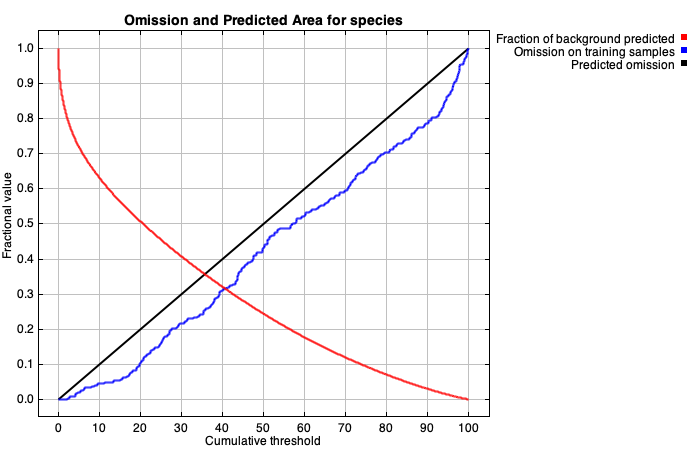
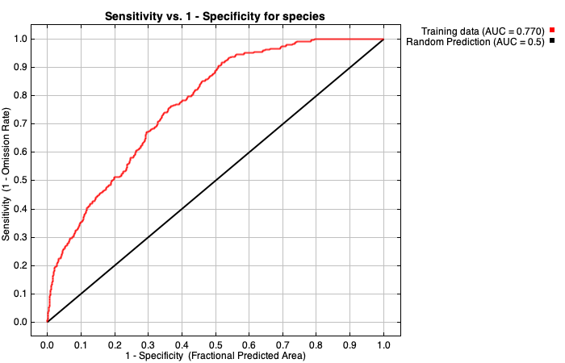
| Cumulative threshold | Cloglog threshold | Description | Fractional predicted area | Training omission rate |
|---|---|---|---|---|
| 1.000 | 0.113 | Fixed cumulative value 1 | 0.857 | 0.000 |
| 5.000 | 0.289 | Fixed cumulative value 5 | 0.719 | 0.020 |
| 10.000 | 0.391 | Fixed cumulative value 10 | 0.631 | 0.045 |
| 2.299 | 0.178 | Minimum training presence | 0.795 | 0.000 |
| 19.848 | 0.493 | 10 percentile training presence | 0.509 | 0.098 |
| 40.666 | 0.600 | Equal training sensitivity and specificity | 0.316 | 0.316 |
| 18.924 | 0.487 | Maximum training sensitivity plus specificity | 0.519 | 0.082 |
| 2.299 | 0.178 | Balance training omission, predicted area and threshold value | 0.795 | 0.000 |
| 4.061 | 0.255 | Equate entropy of thresholded and original distributions | 0.741 | 0.012 |
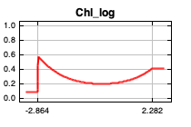
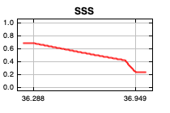
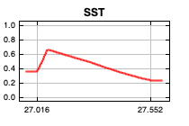
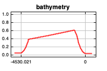
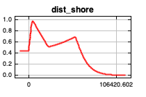
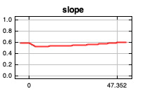
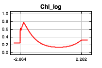
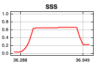
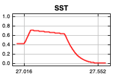
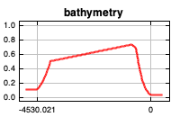
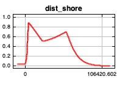
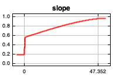
| Variable | Percent contribution | Permutation importance |
|---|---|---|
| dist_shore | 54.3 | 55.7 |
| bathymetry | 37.1 | 24.7 |
| SST | 4.2 | 4.7 |
| Chl_log | 2.4 | 8.5 |
| SSS | 1.4 | 6.1 |
| slope | 0.6 | 0.4 |
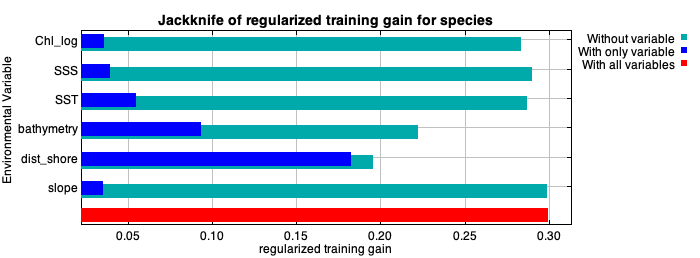